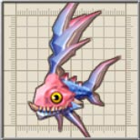
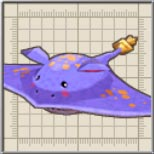
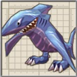
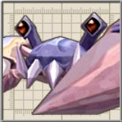

| 名前 |
画像 |
レベル |
HP |
フード |
メモ |
| ばっとさん |
 |
5 |
446 |
卵 |
魔族の使い魔の一種。聴覚を狂わせる超音波で小さな獲物を簡単に仕留める。
前作にも同名のキャラクターが登場しまたが、グラフィックが異なります。 |
| しびれくらげ |
|
4 |
263 |
穴あきチーズ |
逃げながら放電するくらげのモンスター。触手に触れないように注意。 |
| とびいもり |
|
4 |
263 |
穴あきチーズ |
四六時中バネの様に跳ねる奇妙なイモリ。歩行も殆ど行わず、跳ねながら移動する。 |
| そーどふぃっしゅ |
 |
4 |
263 |
穴あきチーズ |
全身刃物でできた魔の魚。気性が荒く、攻撃すると怒って追跡してくる。 |
| しびれまんた |
 |
6 |
1200 |
キウイ |
帯電体質を持つ魔獣。性格は人懐こいが、触れると感電してしまう。 |
| いわがえる |
|
5 |
446 |
卵 |
表面が岩のように硬い蛙。遠距離・近距離の攻撃を巧みに使い分ける。 |
| こぼるてす |
|
5 |
669 |
卵 |
花飾りがチャームポイントの、メスのこぼると。オスより凶暴。
コボレンジャーの隊員でヒロイン。 |
| あくあ |
 |
5 |
446 |
卵 |
水を司る精霊の結晶体。主食は水中の泡。 |
| がにめで |
|
5 |
446 |
卵 |
潮を発生させる力を持つカニ型のモンスター。前にも歩くので注意。 |
| つぼみみっく |
|
6 |
686 |
キウイ |
壺に擬態下モンスター。近づくと突然動きだし、冒険者の手に噛み付く。
ダンジョンでは壺としても扱われるので注意。 |
| わーしゃーく |
 |
6 |
1029 |
キウイ |
獰猛なサメの半魚人。恐ろしいキバで獲物に襲い掛かる。
攻撃をガードする場合があります。 |
| えれくとくらげ |
 |
6 |
2401 |
卵 |
拾った物を食べて変異を起こしたしびれくらげ。纏(まと)う電圧は通常の数十倍。
前作には似たような能力を持つ「くらげさん」、「くらべむん」がいました。 |
| きらーふぃっしゅ |
|
7 |
3455 |
キウイ |
他の魚を際限なく捕食し、巨大に育ったそーどふぃっしゅ。突進の威力が増している。 |
| がにめーでー |
 |
8 |
4735 |
しめじ |
超巨大ながにめで。二本のハサミに最強の防御力を得た。
がにめでは実はヤドカリの一種なのでしょうか。 |
| エフェメルガ |
|
6 |
12351 |
なし |
湖を住処とする巨大な水棲魔獣。強酸性の液体を吐き出し、敵を襲う。
「住処とする」と書いてありますが、アルウェンの魔力から作った魔物だったのでは・・・。 |
| クラーケン |
 |
38 |
89669 |
なし |
地獄の海に住む海の王。強烈な勢いの墨はそれ自体が強力な攻撃となる。
「Zwei!!」の「パーヴェル庭園：夢幻迷宮」のボスです。以前は手となる腕を破壊しないと本体へ攻撃できず、ZWEI II でちょっと弱体化してます。 |
| ベルゼバブ |
 |
48 |
149917 |
(コボルト) |
魔法大戦でで猛威を振るった風の悪魔。飛びながら雷を落とす。
「Zwei!!」では「カヤパの森：煉獄」のボスでした。「こぼるたんX」を除けば「Zwei!!」最強と言われる圧倒的な強さ(レベル最大・最強装備でも即死、瀕死の攻撃がある)、耐久力(ZWEI
II の10倍以上のHP)を持ち、倒すのには30分以上かかったのですが、信じられないほど弱体化してしまい、もう本当に悲しくてしょうがありません。 |
| ? |
|
? |
? |
なし |
エフェメルガが吐き出す「そーどふぃっしゅ」に似た魚。
攻撃方法もソードフィッシュと同じ。さらに、水に浸かると死んじゃうお茶目さん。 |
| 名前 |
画像 |
レベル |
HP |
フード |
メモ |